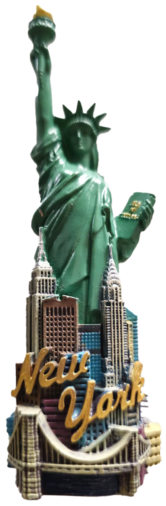
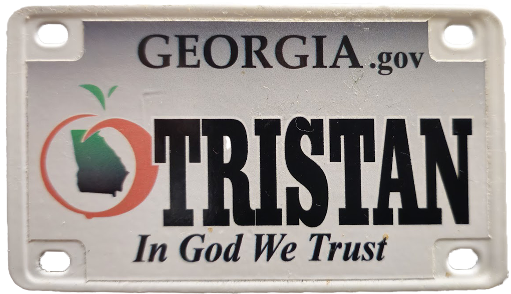
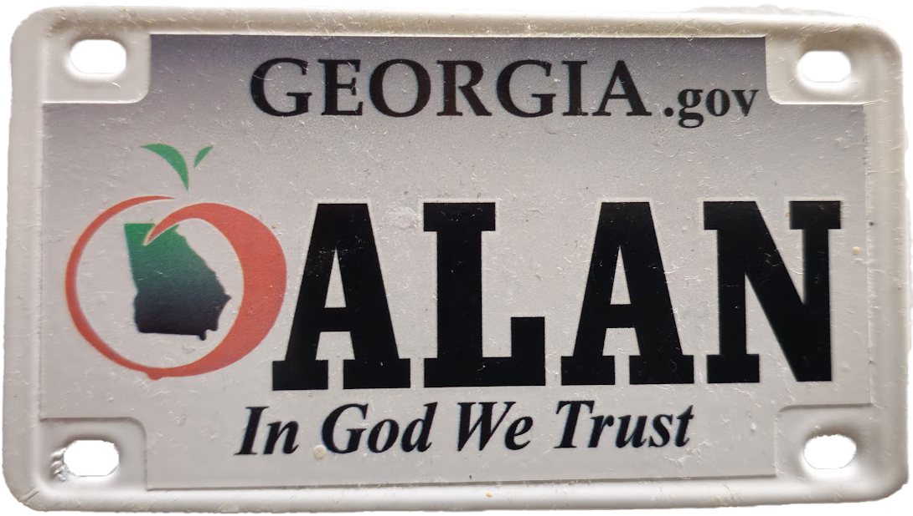
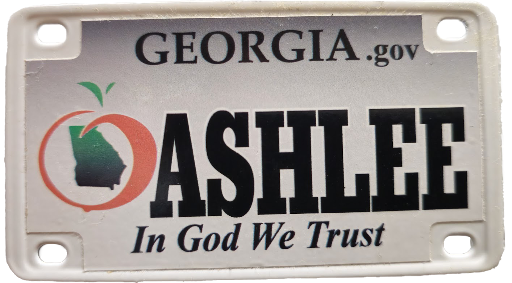
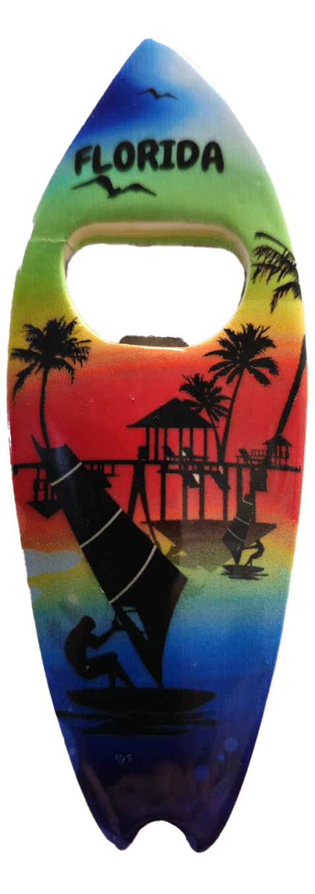
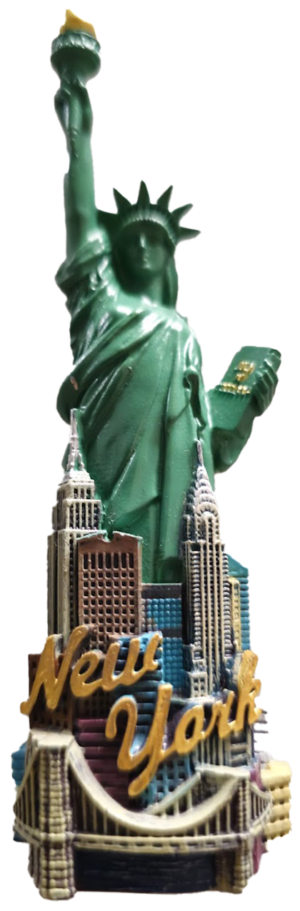
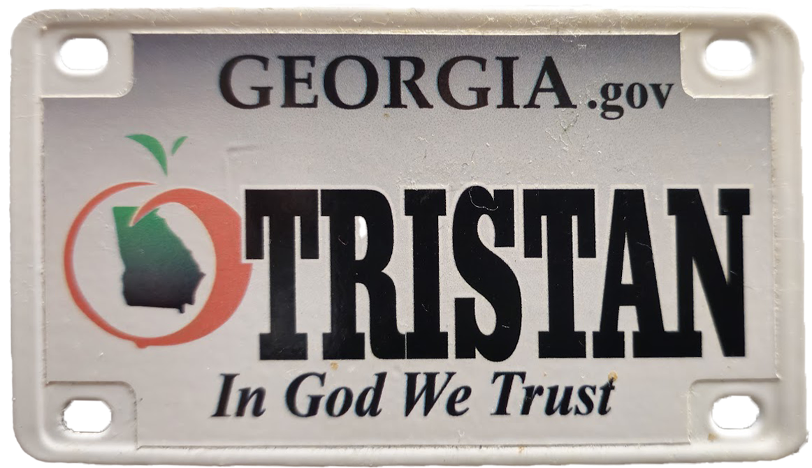
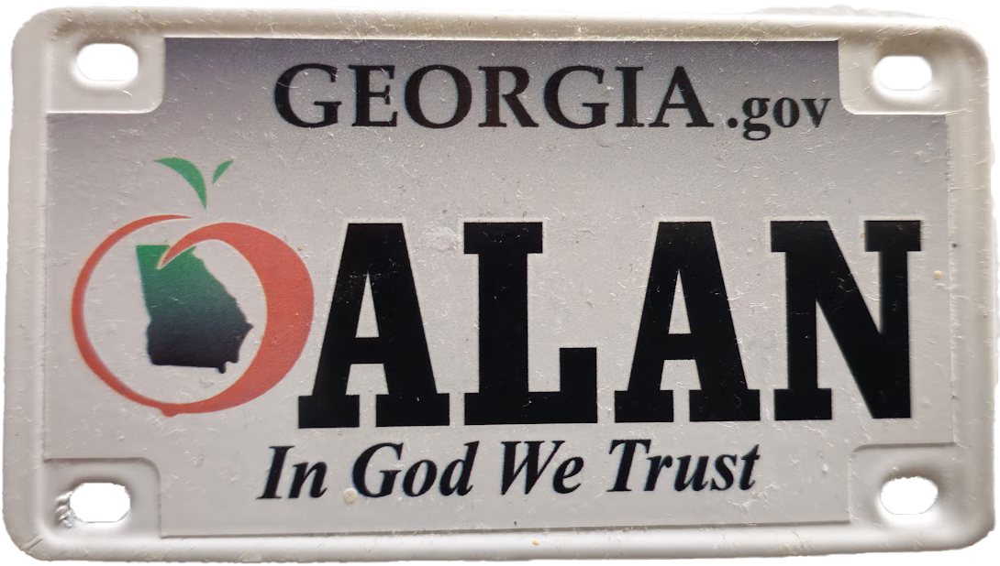
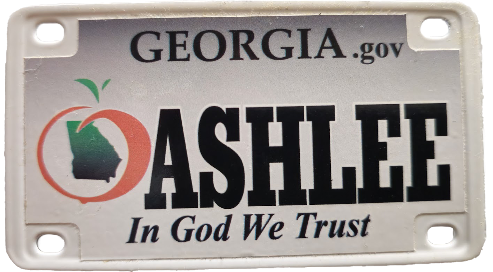
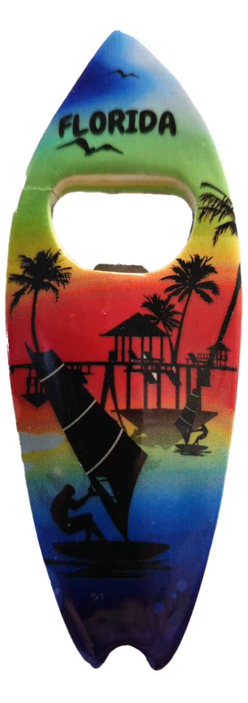

Hi guys! This is my fridge's door. Everywhere I go, I try to get a fridge magnet. The kitchier the better. A baguette from Paris, the colosseum from Rome, a turtle from Florida. I love the cliches. Each magnet is filled with memories of adventures, friends, and and precious moments. I hope to one day fill the fridge doors with photos and magnets. Click on each one to learn more about it!